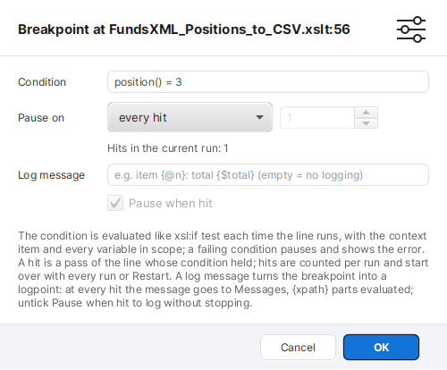
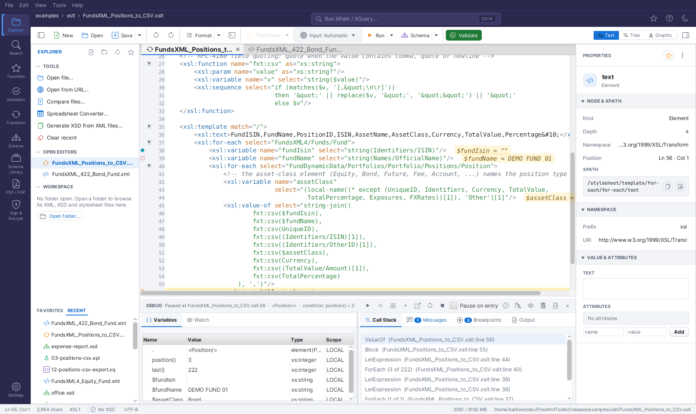
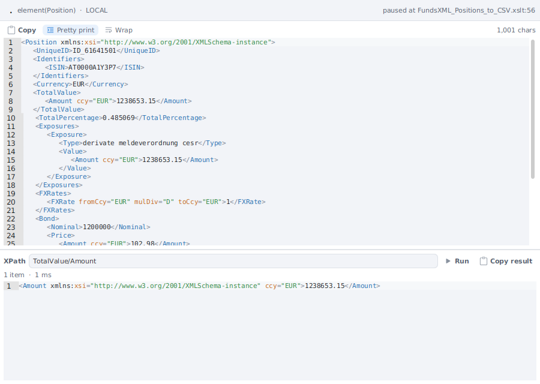

Debugger (XSLT, XQuery, Schematron)¶
FreeXmlToolkit has an interactive debugger for XSLT stylesheets, XQuery files and Schematron schemas: breakpoints (conditional, hit counts, logpoints, template/function/input-node breakpoints), stepping, variables and watches, call stack, coverage and an output-to-source mapping.
Starting a Debug Session¶
Debug (Transform panel, next to Run Transform), Tools → Debug with XSLT…, the Transform ▾ toolbar menu, Run ▾ → Debug Transform (active XSLT document) or Shift+F5 start a full interactive debugger that lets you pause a transformation, step through your stylesheet, and inspect state - similar to debugging in an IDE. It opens the stylesheet as a document (every saved stylesheet already shows its breakpoint gutter, see below) and the DEBUG dock below the editor, so the stylesheet stays visible while you step. The dock shares its space with the OUTPUT panel (OUTPUT | DEBUG strip).
The debugger runs what the editor shows: the stylesheet's text in the editor - unsaved changes
included (Messages then notes Debugging the editor text of … (unsaved changes included)) -
and, for included or imported modules that are open, their editor text too; modules that are not
open are read from disk. The stylesheet needs a file once (a new one must be saved first), so
relative xsl:include / xsl:import hrefs resolve and every module reports its own location. It
uses a Saxon processor of its own, so a normal transformation started during a paused session is
not affected. Started from the Transform panel, the input is the panel's INPUT (the file set
there, otherwise the active document) - exactly as for Run Transform; started with
Run ▾ → Debug Transform on an XSLT document, it is the toolbar's Input target.
Debug Configuration¶
Tools → Debug Configuration… (on a saved stylesheet) sets how it is debugged, saved per stylesheet:
- Input - the Run target (the XML document the Run button uses) or a file.
- Parameters - one
name=valueper line, passed as stylesheet parameters. - Output - automatic (from
xsl:output) or XML / HTML / XHTML / TEXT / JSON. - Pause on entry, even with breakpoints - stop at the first instruction although breakpoints are set (without breakpoints the run pauses on entry anyway).
Debug saves and starts the debugger, Save only saves. With a saved configuration, Debug with XSLT (Shift+F5) and Run ▾ → Debug Transform on that stylesheet use it. Tools → Re-run Last Debug (Ctrl+Shift+F5, ⌘⇧F5) repeats the last debug run with the same stylesheet, parameters and format, reading its input again (the file, or the open document it came from).
Setting Breakpoints¶
- Every saved XSLT document has a breakpoint gutter in the editor's left margin, whether or not the debugger is running: click the slot next to a line to toggle a red breakpoint, or press F9 (Tools → Toggle Breakpoint) on the caret line. The click does not move the caret. Set your breakpoints first, then start the debugger - the run stops at the first one instead of pausing on entry. A stylesheet that was never saved has no gutter (save it once - its file location anchors the breakpoints).
- Breakpoints match the file and line, so a line in
lib/a.xslnever triggers a breakpoint set in anothera.xsl. - An instruction whose start tag spans several lines can carry its breakpoint on any
of those lines - e.g. on the
<xsl:value-ofline of a multi-lineselect. Saxon reports the instruction at the line where the start tag ends, so the run pauses (and the arrow shows) there; the breakpoint itself stays where you set it and counts the hits. Run to Cursor works the same way. - Breakpoints are persisted per file: they are back when you reopen or debug the same file, they survive Restart, and they stay in the gutter after the session ends.
- Breakpoints in included modules count too: open
lib/a.xsl, set a breakpoint, debug the main stylesheet - the run pauses there. The debugger scans the main stylesheet'sxsl:include/xsl:importhrefs at start to pick them up; a module it could not find that way joins as soon as it is opened during the session (pause, jump, or opening it yourself). - The Breakpoints panel lists every breakpoint of the session grouped by file (a header with the file name and count, then line, condition, hit-count rule, log message and how often it was hit in this run); Remove, Edit…, Template…, Clear all and Break on ▾ sit in a small toolbar above the list, and the Delete key removes the selected entry. Double-click an entry to jump to that line.
- Right-click an entry for Enable / Disable / Remove All in
and for Export Breakpoints… / Import Breakpoints…: all line, template and function breakpoints with their settings go to a text file (absolute paths) and can be loaded into another session - an imported breakpoint replaces one on the same file and line. - Breakpoints follow your edits: inserting or deleting lines above a breakpoint moves it with its code (also during a debug session), and deleting a breakpoint's line removes it. Replacing the whole text - reloading the file after an outside change, reformatting the document - leaves the breakpoints on their line numbers. The debugger runs the editor's text, so breakpoints and the run agree also before you save.
- Disable a breakpoint to keep it (with its condition and hit rule) without it stopping the run: untick its checkbox in the Breakpoints panel, or right-click its gutter slot → Disable Breakpoint / Enable Breakpoint. A disabled breakpoint shows a hollow marker in the gutter and a greyed row; it counts no hits. Clicking a hollow marker removes the breakpoint, as for any other.
- Mute in the DEBUG header switches all breakpoints off at once for the session (they are drawn hollow); stepping and pausing still work. Muting is not saved - the breakpoints' enabled state is.
- When a run completes, breakpoints it never reached are flagged: their gutter dot turns amber and the Breakpoints panel marks the row ⚠ … not reached in the last run. Usually the line has no instruction Saxon traces (a closing tag, a comment, an attribute on its own line) - move the breakpoint to the instruction's first line - or the code there did not run for this input. A stopped or failed run flags nothing; the next run clears the flags.
- A breakpoint stops once per execution of its line: an instruction nested inside another one
on the same line (e.g.
<x><xsl:value-of select="@n"/></x>) does not stop the run a second time. Stepping (Step Into) still visits every instruction.
Logpoints¶
A logpoint writes a message instead of (or before) pausing - printf debugging without editing the stylesheet. Right-click a gutter slot → Add Logpoint…, or set a Log message in Breakpoint Properties:
- The message may contain
{xpath}parts, evaluated at that moment like an attribute value template:item {@id}: {count(line)} lines, total {$total}.{{and}}are literal braces; a failing part reads{ERROR: …}and the rest is still logged. - Each message appears in Messages as level LOG with the logpoint's file and line.
- Pause when hit (off for a new logpoint) decides whether the run also stops there.
- Condition and hit count apply: the message is written at the hits that pass both.
- In the gutter a logpoint is a diamond - blue when it only logs, red when it also pauses.
Template, Function and Mode Breakpoints¶
To stop whenever a component runs - wherever it is defined, also in included modules - use Template… in the Breakpoints panel. Choose what to break on and its name (the dialog suggests the names declared in the stylesheet and its modules):
| Break on | Pauses when | Example |
|---|---|---|
| Template rule (match) | a template with that match pattern is entered | item, order/line[@qty] |
| Named template | the named template is called | footer |
| Function | the function is called | f:total or just total (any prefix) |
| Any template in mode | a template runs in that mode | summary |
Patterns compare without spaces. These breakpoints are listed under Templates & functions below the line breakpoints (checkbox to disable, Delete to remove), are saved with the main stylesheet, pause even when the template has no line breakpoint, and are silenced by Mute. The status names what was entered (· template match="item").
Break When an Input Node Is Processed¶
To stop when the stylesheet reaches a particular node of the input, open the input XML, put the caret on the element and right-click → Break When Processed (shown while a debug session runs). The run pauses whenever that element becomes the context node - a template rule matched it or a loop reached it - once per visit, not at every instruction that runs while it stays the context. The status reads · input node /order/item[2] (orders.xml:3).
The breakpoint is listed under Templates & functions in the Breakpoints panel (checkbox, Delete), saved with the main stylesheet and silenced by Mute; right-click the element again → Remove Break When Processed to drop it. The node is identified by its position in the file, so editing the input above it moves it out of reach.
Break on Errors and Messages¶
The Breakpoints panel's Break on ▾ menu pauses the run independent of line breakpoints:
| Option | Pauses | Default |
|---|---|---|
| Dynamic errors | when an instruction fails at run time (division by zero, a failed cast, error()) - at the failing instruction, with its context item and variables intact, so you can see why. The status reads error FOAR0001: … in red; Continue lets the error end the run as usual |
on |
| Only error codes… | limits Dynamic errors to the codes you list, comma-separated, e.g. FOAR0001, XTDE0640; XTDE* stands for every code starting with XTDE. Empty = every error. The menu shows the current list |
every error |
| xsl:message terminate="yes" | before a terminating message is emitted (also when terminate is computed, e.g. {if (…) then 'yes' else 'no'}) |
on |
| Every xsl:message | before every xsl:message |
off |
The choices are saved. Mute silences these as well. Static errors (the stylesheet does not compile) are not run, so there is nothing to pause at - they appear in Messages.
Conditional Breakpoints¶
A breakpoint can carry an XPath condition: the run pauses at that line only when the
condition is true at that moment - for example @id = '4711' inside a template that runs for
every item, $total > 1000, or position() = last().
- Right-click the gutter slot of a line → Add Conditional Breakpoint… (a line without a breakpoint) or Breakpoint Properties… (a line with one), Remove Condition, Remove Hit Count Rule, Remove Breakpoint. In the Breakpoints panel select an entry and press Edit…. Both open the Breakpoint Properties dialog with the condition and the hit count.
- An empty condition makes the breakpoint unconditional again.
- A breakpoint with a condition or a hit-count rule shows a question-mark marker in the gutter; its tooltip names the rules and the hits of the current run.
- The condition is evaluated like
xsl:if test(effective boolean value): the context item and every variable in scope at that line are available, plus the stylesheet's namespace prefixes. A non-empty node sequence is true, an empty one false.position()andlast()refer to the item being processed (the 2nd of 5), the same as in watches; inside a predicate (item[position() = 1]) or a path step they keep their usual meaning. - The dialog checks the condition and the log message while you type: a syntax error
(
$total >, an unclosed{in a log message) appears in red below the fields and OK stays closed until it is fixed. Variables, the stylesheet's namespace prefixes and its own functions are not checked there - they are only known at the line during the run. - When the run pauses because of a condition, the status says so (· condition: @id = '4711'). If the condition cannot be evaluated (a typo, an undeclared variable), the run pauses anyway and the status shows the error in red - a broken condition never silently skips the breakpoint.
- The condition is checked every time the line runs, so a breakpoint inside a large loop costs time on each pass. Conditions are saved with the breakpoint (per file, like all breakpoints).
- Cost. A pass that does not pause only collects what the condition can see (the context
item, the focus and the variable values); the Variables table, the XSLT context and the call
stack are built only when the run actually pauses. Logpoints work the same way. Measured
over a loop of 10,000 items (median of 15 runs,
DebuggerPerfBenchmark):
| Scenario (10,000 passes) | Before | Now |
|---|---|---|
| Condition that is never true | 97 ms | 66 ms |
| Logpoint that never pauses | 95 ms | 64 ms |
| Condition, 12-level call stack per item (1,000 items) | 46 ms | 28 ms |
The remainder is the XPath evaluation itself, roughly 4 µs per pass - a condition in a loop of a million items adds about four seconds. A debug run without any breakpoint takes 29 ms for the same loop.

Hit Counts¶
Every breakpoint counts its hits during a run - a hit is a pass of its line where its condition (if any) held. The count is shown in the Breakpoints panel (· 5 hits) and in the gutter tooltip, and starts over with every run and Restart.
In Breakpoint Properties → Pause on you can restrict pausing by the count:
| Pause on | Pauses at hit |
|---|---|
| every hit | 1, 2, 3, … (default) |
| exactly the N-th hit | N only - e.g. the 500th item of a loop |
| the N-th hit and later | N, N+1, … |
| every N-th hit | N, 2N, 3N, … |
Condition and hit count combine: condition @type = 'B', exactly the 3rd hit pauses at the
third item of type B. When a hit-count rule makes the run pause, the status says so
(· hit 3 (hit = 3)). Hit-count rules are saved with the breakpoint, the counts are not.
Starting and Stepping¶
Without breakpoints the run pauses at the first instruction (Pause on entry, a toggle in the header - switch it off to run straight to the first breakpoint). The header controls are icons - hover one for its name and key:
| Control | Key | Description |
|---|---|---|
| Continue | F5 | Resume until the next breakpoint |
| Run to Cursor | Ctrl+F10 (⌘F10) | Run to the caret line of the stylesheet (Tools → Run to Cursor, or right-click a gutter slot → Run to Here). A one-shot stop: breakpoints on the way still pause and cancel it; it works while breakpoints are muted. Without a running session it starts the debugger (like Run ▾ → Debug Transform) and runs to that line instead of pausing on entry |
| Pause | F6 | While the run is going: break in at the next instruction - e.g. to look into a long loop or an endless recursion without a breakpoint (the status reads paused by request) |
| Step Into | F7 | Step into the current instruction - the next stop is the next line that runs (inside a called template or function too) |
| Smart Step Into | Shift+F7 | When the paused line calls several things (f:a(1) + f:b(2), an xsl:call-template next to an xsl:apply-templates), a menu at Step Into lists them - pick the one to stop in. Also a right-click on Step Into. One call steps straight into it; none is a plain Step Into. The run stops when that function / template is entered, even while breakpoints are muted |
| Step Over | F8 | Execute the current instruction without descending |
| Step Out | Shift+F8 | Run until the current template/function returns |
| Restart | Run again from the start with the same breakpoints; the stylesheet is read again from the editor, so your edits (saved or not) are picked up | |
| Stop | Abort the running transformation | |
| Mute | Toggle: the run does not stop at any breakpoint (steps still pause) | |
| Coverage | Toggle (remembered): from the next run on, record which lines run - see Coverage | |
| Show in editor | Jump the editor to the currently paused line | |
| Show input | Select the input document at the paused context node (see below) | |
| Evaluate | Alt+F8 | Open the value window on the selected frame's context item with the XPath field ready - evaluate any expression in that frame (its variables in scope); Up / Down in the field recall earlier expressions |
| ✕ | End the session and close the DEBUG dock (OUTPUT stays) |
Steps move line by line: instructions nested on the paused line (a literal element with
its xsl:value-of inside) do not stop again, and instructions without a source line are
skipped. A line that runs again later (the next loop iteration, a recursive call) is a new stop.
The step keys only act while the debugger is paused and F6 only while it runs; otherwise F5 and F8 keep their usual meaning. A single long evaluation (one huge XPath expression) is not interrupted - Pause takes effect at the next instruction. The paused line is tinted in the editor and a green arrow marks it in the gutter; a hit breakpoint shows a yellow arrow over the red circle.
How much slower is a debug run? The debugger watches every instruction, so a debug run
takes about 1.5 to 2 times as long as a normal transformation, with or without breakpoints.
Saxon's own trace instrumentation is almost free; the time goes into following the call stack
and recording which instruction wrote which output.
Breakpoints on lines that never run cost nothing extra. Measured with DebuggerPerfBenchmark
(median of 15 runs, stylesheet compiled in each run):
| Workload | Normal run | Debug run | Factor |
|---|---|---|---|
| 10,000 items, one template | 20 ms | 29 ms | 1.5 |
| 100,000 items, one template | 153 ms | 278 ms | 1.8 |
| 1,000 items, 12-level recursion each | 14 ms | 23 ms | 1.6 |
Variables, the call stack and the XSLT context are only collected when the run pauses, so stepping and hitting breakpoints do not slow the run between pauses.
Coverage¶
With Coverage on in the DEBUG header, every run records which stylesheet lines ran. After the run, the breakpoint gutter shows a green bar next to each line that ran (the tooltip says how often) and a red bar on the lines of every template or function that never ran for this input - dead code, or a hint that the test input lacks a case. Messages lists those templates and functions (Never ran: template match="…"); double-click one to jump to it. The markers stay until the next run. Recording costs next to nothing (a 100,000-item run: 278 ms without, 282 ms with coverage).
Inspecting State¶

The context node in the input. At every pause the line of the current context node
(.) is tinted blue in the input XML document - the stylesheet's paused line stays yellow
and in front. Show input in the header switches to the input document at that line. The
input is the file the run read (Transform panel INPUT, FOP XML input, the Run target), or the
open document whose text was transformed; a node from a document loaded with doc() /
document() is shown in that file, which opens behind the stylesheet. Attributes and text
nodes point at their element's line, the document node at the root element.
Below the header, the paused state is shown in two tab groups side by side: Variables | Watch on the left (the state at the pause point), Call Stack | Messages | Breakpoints | Output on the right (navigation, log and the output so far). Drag the divider between the groups to give one side more room - the position is remembered, and so is the tab you last chose in each group (a tab the debugger brings forward by itself, like Messages after a failed run, does not change that choice). Messages and Breakpoints show a count badge on their tab; Messages is highlighted when output arrives while another tab of its group is in front, and a failed run brings Messages to the front so the error is readable at once. In Watch and Breakpoints the Delete key removes the selected row.
Why Did This Template Match?¶
Right-click a template rule in Call Stack → Explain Match… to see which rules of the frame's mode could process its context node. Every rule pattern is tested against the node and listed:
- ✓ wins - the rule XSLT picks: highest import precedence, then highest priority, then the last one in the stylesheet;
- matches, loses - with the reason (lower priority, lower import precedence, earlier in the stylesheet);
- no match - the remaining rules of the mode.
Each line shows the pattern, its priority (default when computed from the pattern, e.g.
item 0, * -0.5, item[@n] 0.5) and its module and line; double-click opens the rule.
Imports and includes are followed; rules in other modes are left out. When no rule matches,
the built-in rule applies.
Changed Values¶
Values that changed since the previous pause in the same template or function are shown in
bold blue - in Variables (including variables that are new there) and in Watch. Pausing in
the item template for the second item marks $label and position(), but not a global that
stayed the same. The comparison is per frame: selecting an outer frame in Call Stack compares
with that frame's previous pause. A new run starts without markers.
Exploring Structured Values¶
Variables is a tree: a node value unfolds into its attributes and child nodes (element →
@id, <item>, text(), …; indentation whitespace is skipped), a sequence into its items
[1], [2], …, a map into its entries and an array into its members - built as you
expand them, at most 500 children per row. Every row knows the XPath that reaches it from its
variable, e.g. $order/item[2]/@sku: Open Value… opens that node in the value window, Add
to Watches adds the path as a watch, a click on its value opens it. Values are shown on one
line; the tooltip and the value window show them in full.
Values in the Code¶
While the run is paused, the stylesheet shows the current values next to the declarations:
$fundName = DEMO FUND 01 appears in a yellow tag at the end of the xsl:variable /
xsl:param line, as in the screenshot above.
- Shown are the locals of the template or function the run is paused in, declared up to the paused line, and the global variables and parameters that have been evaluated so far (Saxon evaluates a global on first use).
- A declaration over several lines shows its value on the line where the start tag ends.
- Long values are cut at 80 characters - click the value in Variables to see it whole.
- The values disappear when the run continues and as soon as you edit the stylesheet (they would no longer match their lines).
Values Under the Mouse¶
While the run is paused, rest the mouse on a variable reference ($total, $f:rate, also
inside {$x} value templates) in the stylesheet: after half a second a small popup shows its
value and type, evaluated in the selected call stack frame. Select an XPath expression
(e.g. count($items) * 2) and rest the mouse inside the selection to evaluate the whole
expression. Open in value viewer in the popup opens the full value. Errors (an undeclared
variable, a typo) are shown in the popup; nothing happens while the run is not paused.
Inspecting an Outer Frame¶
At every pause the innermost frame is selected in Call Stack, and Variables shows the
pause as described above. Select another frame to see the state of a calling template or
function: Variables then lists that frame's context item (.), its own local variables and
the globals, under a banner such as Frame 3 of 5: template match="/" · main.xsl:4, and the
Watch expressions are re-evaluated in that frame (its context item and variables). Opening a
value, Copy Value and the value window's XPath use the selected frame as well. Select the top
frame to return to the pause. position() / last() are shown for the innermost frame only.
The 32 innermost frames carry values; a deeper frame shows an empty table with a note.
Viewing a Value in Full¶

The Value column of Variables and Watch shows only the start of a value (a node can be thousands of characters long). Click a value - or select the row and press Enter, or right-click → Open Value… - to open it in its own value window:
- The complete value, pretty-printed (toggle Pretty print), with XML syntax highlighting and line numbers; Wrap wraps long lines, Copy copies the whole value. A sequence shows one item per line and its item count.
- An XPath field below that runs against this value: a single node is the context item
(
item[1]/price,count(//item)),$valueis the whole value ($value[2]for a sequence), and every variable of the pause stays in scope. Run (or Enter) shows the result with its item count and time; Copy result copies it. - Value windows are separate, resizable windows - keep several open next to the editor. They show the pause they were opened at (paused at file:line), stay open while you step, and close when the debug session ends. Clicking the same value of the same pause again brings its window to the front.
- Right-click → Copy Value copies the full value without opening a window.
- A Watch value is re-evaluated in full for the window (the table keeps a shortened version).
- Call Stack frames open the same way (select a frame and press Enter, or right-click → Open Value…; double-click still jumps to the line): the window shows that frame's context item, and its XPath field sees that frame's own local variables plus the globals - so you can inspect the state of a calling template, not just the innermost one. The 32 innermost frames carry these values; deeper frames show only their name and location.
| Panel | Shows |
|---|---|
| Variables | The context item (.), position() / last(), the XSLT context (scope XSLT: the current mode when it is a named mode; inside xsl:for-each-group current-grouping-key() and current-group(); inside xsl:matching-substring regex-group(0…n); the tunnel parameters passed down, marked (tunnel); accumulator-before('…') of every accumulator that applies to the context node's document), every local variable in scope, and every global variable evaluated so far - with their real values and XDM types (globals not yet evaluated are not forced, that would change the evaluation order). Click a value to open it in full |
| Watch | Your XPath expressions, evaluated against the paused context item with all variables in scope: count(item), $total, string(@id), position(); the stylesheet's namespace prefixes are available. Type an expression into the field above the table and press Add, or right-click a variable → Add to Watches; Remove (or the Delete key) drops the selected one, a double-click or F2 edits an expression in place. Watches are saved per stylesheet and come back with its next debug session. Re-evaluated at every pause; errors are shown in the row. Click a value to open it in full |
| Call Stack | Template and function frames, innermost first (a template rule running in a named mode shows mode="…"; a loop - xsl:for-each, xsl:for-each-group, xsl:apply-templates - shows the item its body is working on, e.g. ForEach (3 of 222), and xsl:iterate its round, (iteration 4)), each with its module and line (the instructions nested inside them are dimmed); double-click a frame to jump to it - also into an included module. Selecting a frame switches Variables and Watch to that frame (see below). Enter or Open Value… opens the frame's context item and variables |
| Messages | xsl:message output and Saxon warnings live, as they happen, with their location; double-click jumps to the line. A failed run shows its error here too. The toolbar filters by level (Messages / Warnings / Errors - terminate="yes" counts as an error) and by text, Copy copies the selected messages (or all shown ones), Clear empties the list. The tab badge always counts all messages |
| Breakpoints | All breakpoints of the session with Remove / Clear all above the list, see above |
| Output | What the transformation has written so far, refreshed at every pause - see where in the result you are; when the run finishes, the complete results (the principal one also in OUTPUT). The serializer may hold back a just-opened start tag until it knows whether the element stays empty, so the text can lag by one tag. With xsl:result-document a selector switches between the principal and each secondary result (kept in memory - a debug run writes nothing to disk; xsl:result-document itself needs Settings → Schemas & Validation → PARSER → Allow XSLT extension functions, off by default). Documents (n) lists what the run loaded with doc(), document() or collection(); click a file to open it. Copy copies the shown text |
From the Output to the Stylesheet¶
Double-click a line in the DEBUG dock's Output tab - while paused or after the run -
to open the instruction that wrote it: the xsl:value-of, xsl:text, literal element or
copy that produced that text. The jump uses the debugged run's own record of who wrote what,
so it works for the principal output; secondary xsl:result-document outputs are not
mapped. The serializer writes an element's start tag only together with the next thing it
writes, so a click on a start tag can land on the first instruction inside that element.
The Result¶
When the run ends the status reads Finished · N ms · M chars → OUTPUT and the result is shown in the OUTPUT panel. DEBUG stays in front so Messages remain readable - the OUTPUT toggle lights up to show it has new content. A stopped run shows Stopped, a failed one Error: ….
Debugging XSL-FO stylesheets¶
The PDF / FOP panel's TOOLS → Debug stylesheet… runs an XSL-FO stylesheet in the same debugger (the page-size parameters are passed on). The FO it produces lands in OUTPUT and can be rendered with the panel's Render PDF from FO… - see PDF Generator.
Debugging XQuery¶
The debugger runs XQuery too. Open a saved .xq / .xquery file and press Shift+F5 (or
Run ▾ → Debug Query): the query runs against the same Input as Run Query (the most
recently active XML document, or the one picked in the Input selector); a query without an
input runs without a context item.
Everything above works the same way: breakpoints in the query's gutter (click, F9,
conditions, hit counts, logpoints), stepping, Variables (the let and for variables of the
FLWOR expression, function parameters), Watch, the Call Stack with function frames, Break
on errors, Coverage and the Output tab. fn:trace() output appears in Messages
(label: value). Smart Step Into offers the functions declared with declare function.
What Saxon traces in a query is coarser than in a stylesheet: a stop is a let clause, a
constructed element or attribute, or a function call - a for or where clause has no stop
of its own. Explain Match is for template rules and does not apply.
Debugging a Schematron¶
A Schematron can be debugged too. Open a saved .sch file and press Shift+F5 (or
Run ▾ → Debug Schematron, or the Run button): the debugger checks the Input - the
most recently active XML document, or the one picked in the Input selector shown for
Schematron tabs. Behind the scenes SchXslt compiles the Schematron to XSLT (the same compiler
validation uses) and the debugger runs that XSLT, but everything you see is the .sch:
- Breakpoints go into the
.schgutter, including included files (sch:include). A breakpoint on ansch:assertorsch:reportstops once for every node its rule fires on, before the test is evaluated - add a condition (for example$n gt 5) to stop only for some. A breakpoint on ansch:rulestops when the rule fires. - Stepping goes from rule to
sch:letto assert to report; SchXslt's own driver code is skipped. Functions written in the Schematron (xsl:function) can be stepped into. - Variables show the
sch:letvalues of the rule (and the global ones); Watch and hover evaluate XPath with the Schematron'ssch:nsprefixes. - When the run ends, Messages lists every failed assert (warning) and successful report
with its text and the location of the node; a double-click jumps to the
.schline. The Output tab shows the SVRL report.
The .sch file is compiled as saved - unsaved changes are not included (a note in Messages
says so). The mapping follows the structure SchXslt produces (one template per rule, one test
per assert and report, matched by their text). Rules of abstract patterns (is-a), whose
context and tests are rewritten by the compiler, have no .sch lines to stop at; abstract
rules used through sch:extends work, they stop at the abstract rule's asserts. Quick-fix
code (SQF) is not part of the run.